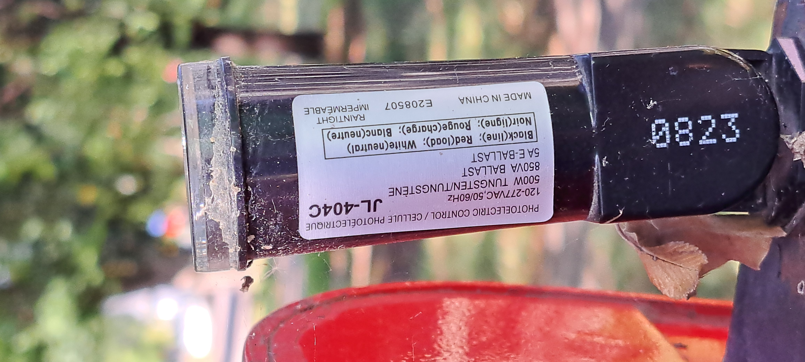
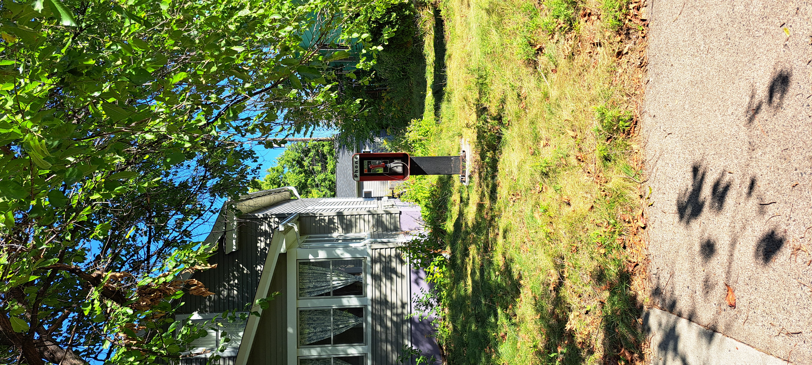
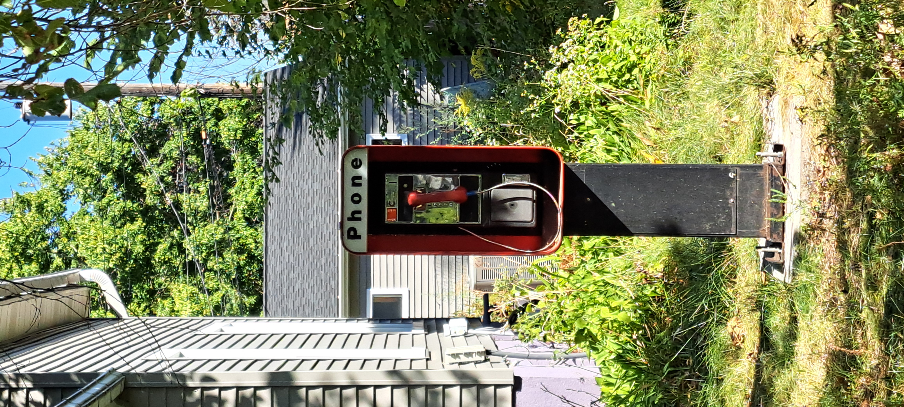

A red public payphone standing in a front yard in Minneapolis, photographed 2026-09-10. The booth sits on a weathered black post; the photoelectric control on top is marked JL-404C and 0823. Location metadata was removed before publishing.
Close-up: the boothRed booth showing the 'Phone' sign, red handset on armored cord, and coin slot detail.EXIF: real, embeddedverifying…

Control unit: JL-404CPhotoelectric control mounted on the black post, marked JL-404C and 0823.EXIF: real, embeddedverifying…

Full scene from the sidewalkThe payphone booth standing in the front yard beside the house, surrounded by grass and trees.EXIF: real, embeddedverifying…

The post and boothMid-range view of the red booth mounted on its weathered black post, with the house and vegetation visible.EXIF: real, embeddedverifying…